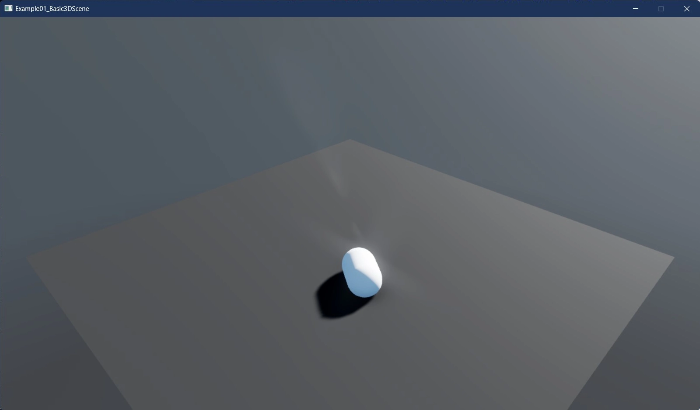

Stride 4.2 Release notes
February 6th, 2024
Stride contributors are thrilled to announce the release of Stride 4.2, now fully compatible with .NET 8 and leveraging the latest enhancements in C# 12. This release brings significant improvements in performance, stability, and developer experience.
Read the full blog post here: Announcing Stride 4.2
A massive thank you to the open-source Stride community for your dedicated contributions. This release saw over 75 contributions from more than 22 amazing contributors, each playing a crucial role in making Stride 4.2 a reality.
What's new in Stride 4.2
Stride 4.2 includes numerous enhancements and improvements. Here’s what to expect:
.NET 8 Integration: Stride 4.2 is now fully aligned with .NET 8, harnessing its performance improvements and efficiency gains for game development. This means faster execution times, reduced memory footprint, and access to the latest C# features, making your development smoother and more efficient. Learn more
C# 12 Features: With C# 12, Stride users can write cleaner, more concise code thanks to new language features. These improvements reduce boilerplate and enhance readability. Discover C# 12
Changed Assimp Binding to Silk.Net.Assimp: This update transitions the asset compiler's binding from C++/CLR to Silk.Net.Assimp, a move that not only simplifies the codebase but also paves the way for asset compilation on non-Windows systems, broadening Stride's accessibility. See the pull request
Migration NET6+ and More gettextnet#2: Stride's commitment to staying current with .NET versions continues, ensuring compatibility and leveraging the stability and features of the latest .NET environment across all aspects of the engine. Check out the update
Enable Multiple Profiler Consumers and Add a Timeline/Tracing Profiler: This enhancement introduces a profiler with chrome://tracing output format, significantly improving the debugging and performance tuning process by allowing for a more granular analysis of game performance. Explore the feature
Feature: Add Support for F# and VB Project Types: Stride now welcomes developers using F# and Visual Basic, offering support for code-only projects in these languages. This opens up Stride to a broader audience. Learn about F# and VB support
Stride Diagnostics Analyzer: This new tool provides immediate feedback within your IDE, identifying potential compatibility issues with Stride's serialization system. It's about making your development process smoother and helping you catch and resolve issues faster. Discover how it works, the docs page and here is the pull request.
OpenVR Handle Custom Resolution Specified by the User Through VR Settings: Enhancing VR development, this update allows developers to specify custom resolutions for VR projects, optimizing performance and visual quality for various VR devices. See the details
Editor Enhancements:
Dynamic Snapping for Selected Objects: This feature introduces dynamic snapping while transforming objects, improving precision and workflow efficiency within the Stride Editor. Dynamic snapping PR
Animation Stack Selection for FBX Imports: Stride now allows you to select specific animations from a stack when importing FBX files, giving you more control over the assets you bring into your projects. Learn more
Automatic Asset Copying to Resources Directory: To streamline asset management, the editor can now automatically copy imported assets to the project's Resources directory, ensuring your assets are always where they need to be. See how it works
What's Changed in Details
- Fixed Exception Caused By Privacy Policy URL in Crash Reporter by @MeharDT in https://github.com/stride3d/stride/pull/1878
- docs: add acastrodev as a contributor for code by @allcontributors in https://github.com/stride3d/stride/pull/1886
- docs: add SVNMLR as a contributor for design by @allcontributors in https://github.com/stride3d/stride/pull/1887
- docs: add JeromyWalsh as a contributor for code by @allcontributors in https://github.com/stride3d/stride/pull/1888
- docs: add parhamgholami as a contributor for design by @allcontributors in https://github.com/stride3d/stride/pull/1889
- Fix missing OpenGLES texture formats. by @Basewq in https://github.com/stride3d/stride/pull/1898
- field typo by @IXLLEGACYIXL in https://github.com/stride3d/stride/pull/1900
- [Editor] Improve Cameracontrol in Editor by @SVNMLR in https://github.com/stride3d/stride/pull/1879
- [XML Comment] Minor updates on EFlags in CollisionFilterGroups.cs by @VaclavElias in https://github.com/stride3d/stride/pull/1910
- Fixes the issue where projects were disappearing from the launcher by @acastrodev in https://github.com/stride3d/stride/pull/1880
- Fix typo in translations generation by @Ethereal77 in https://github.com/stride3d/stride/pull/1916
- Handle importing meshes with duplicate material names by @adrsch in https://github.com/stride3d/stride/pull/1920
- [Native] - Implement some existing C++ methods in C# by @Jklawreszuk in https://github.com/stride3d/stride/pull/1896
- [Launcher] Prevent launcher automatically closing when offline by @Eideren in https://github.com/stride3d/stride/pull/1912
- Small refactoring changes in Stride.GameStudio by @Jklawreszuk in https://github.com/stride3d/stride/pull/1741
- Remove MSBuild.Extras from project by @Jklawreszuk in https://github.com/stride3d/stride/pull/1895
- [Editor] Allow drag and drop of EntityComponent by @Eideren in https://github.com/stride3d/stride/pull/1921
- Add editor settings for the camera speed increase/decrease hotkeys by @adrsch in https://github.com/stride3d/stride/pull/1927
- docs: add adrsch as a contributor for code by @allcontributors in https://github.com/stride3d/stride/pull/1930
- Let the user set the default Bullet gravity vector in PhysicsSettings by @adrsch in https://github.com/stride3d/stride/pull/1928
- Migrate Irony.GrammarExplorer to net 6.0 by @Jklawreszuk in https://github.com/stride3d/stride/pull/1932
- [Core] Enable multiple profiler consumers and add a timeline/tracing profiler by @froce in https://github.com/stride3d/stride/pull/1788
- [Build] Fixed an errors in the build pipeline associated with having a space in the user name by @Fydar in https://github.com/stride3d/stride/pull/1941
- fix(graphics): Stop FastTextRenderer VB clobbering by @froce in https://github.com/stride3d/stride/pull/1954
- Update SSH.NET to 2023.0.0 by @WojciechNagorski in https://github.com/stride3d/stride/pull/1951
- [Build] Fix Android build error by @froce in https://github.com/stride3d/stride/pull/1949
- [Docs] Use XML documentation lists by @Fydar in https://github.com/stride3d/stride/pull/1948
- [Editor] Remove some windows dependencies in editor libraries by @Kryptos-FR in https://github.com/stride3d/stride/pull/1908
- parse numbers in NumericTextBox using CurrentCulture by @Schossi in https://github.com/stride3d/stride/pull/1811
- Xml comments fixing 1 by @VaclavElias in https://github.com/stride3d/stride/pull/1918
- [Presentation] Reduce allocations when parsing number in NumericTextBox by @Kryptos-FR in https://github.com/stride3d/stride/pull/1955
- [Sample] Replace deprecated GetServiceAs calls by @Eideren in https://github.com/stride3d/stride/pull/1943
- Fix compiling assets in Android build by @Basewq in https://github.com/stride3d/stride/pull/1905
- Removed all references to $(SolutionDir) from build artifacts by @JeromyWalsh in https://github.com/stride3d/stride/pull/1894
- [Serialization] Fix diverging rules for editor and runtime serialization of fields and properties by @Eideren in https://github.com/stride3d/stride/pull/1875
- feat(extension): Rename launcher buttons for clarity by @acastrodev in https://github.com/stride3d/stride/pull/1872
- Stride Diagnostics Analyzer by @IXLLEGACYIXL in https://github.com/stride3d/stride/pull/1864
- Fix Building by @MaximilianEmel in https://github.com/stride3d/stride/pull/1956
- [Math] Add a couple of helpers for Vectors by @ch3mbot in https://github.com/stride3d/stride/pull/1769
- Fix #1769 and introduce an optional argument to specify a different r… by @Kryptos-FR in https://github.com/stride3d/stride/pull/1964
- [Github] Update pull request template to ensure users tried out their changes by @Eideren in https://github.com/stride3d/stride/pull/1965
- Fixed small xml docs mistake by @Doprez in https://github.com/stride3d/stride/pull/1976
- Revert "[Editor] Remove some windows dependencies in editor libraries (#1908)" by @Eideren in https://github.com/stride3d/stride/pull/1980
- [AssemblyProcessor] Fixed packing path. by @Basewq in https://github.com/stride3d/stride/pull/1987
- [Core] Make object id more performant by @IXLLEGACYIXL in https://github.com/stride3d/stride/pull/1957
- [Docs] Move bounty paragraph to a more prominent spot by @Eideren in https://github.com/stride3d/stride/pull/1984
- [Readme] Some additional info for building Stride from source by @tebjan in https://github.com/stride3d/stride/pull/1988
- [Docs] Update PropertiesDemo.cs by @Eideren in https://github.com/stride3d/stride/pull/1991
- Fix failing to load data/db/index file on non-Win desktop platforms by @Jklawreszuk in https://github.com/stride3d/stride/pull/1995
- [Shaders] Fixes
EffectValueDescription.DefaultValuefor negative values by @azeno in https://github.com/stride3d/stride/pull/1990 - [Editor] Re-introduce workaround for missing input while navigating by @Eideren in https://github.com/stride3d/stride/pull/1897
- [Build] Fix native library loading picking up invalid files by @Basewq in https://github.com/stride3d/stride/pull/1999
- Fixes OpenXR by @MaximilianEmel in https://github.com/stride3d/stride/pull/1911
- [Breaking] Scoping generic extension methods by @Fydar in https://github.com/stride3d/stride/pull/1959
- Add information about Irony.GrammarExplorer project by @Jklawreszuk in https://github.com/stride3d/stride/pull/2007
- [VR] Remove framecap from VR sample by @Eideren in https://github.com/stride3d/stride/pull/2002
- Bump Newtonsoft.Json from 12.0.3 to 13.0.1 in /sources/metrics/Stride.Metrics by @dependabot in https://github.com/stride3d/stride/pull/1539
- [OpenVR] Handle custom resolution specified by the user through VR settings by @Eideren in https://github.com/stride3d/stride/pull/2000
- Update NuGet libraries to 6.4.2 by @manio143 in https://github.com/stride3d/stride/pull/2017
- Let the user pick which animation stack to import in an fbx by @adrsch in https://github.com/stride3d/stride/pull/1977
- Fixes OpenGL by @MaximilianEmel in https://github.com/stride3d/stride/pull/2023
- Update dotnet 8 by @Doprez in https://github.com/stride3d/stride/pull/1616
- [Native] - Implement IsXInputDevice method in C# by @Jklawreszuk in https://github.com/stride3d/stride/pull/1926
- Rollback changes to Stride.Native.targets and add StrideNative.cpp by @Kryptos-FR in https://github.com/stride3d/stride/pull/2047
- Use central package management by @Kryptos-FR in https://github.com/stride3d/stride/pull/2045
- [Build] Use central package management - missed a couple of projects by @Kryptos-FR in https://github.com/stride3d/stride/pull/2052
- [Profiling] Fix performance regression in FastTextRenderer by @Eideren in https://github.com/stride3d/stride/pull/2058
- [Project] GitIgnore Rider cache/user config by @Eideren in https://github.com/stride3d/stride/pull/2062
- [Build] Fix build following changes from #2045 by @Eideren in https://github.com/stride3d/stride/pull/2061
- Replace net 6 leftovers by @Jklawreszuk in https://github.com/stride3d/stride/pull/2038
- updated missed dotnet 6 reference in readme by @Doprez in https://github.com/stride3d/stride/pull/2051
- [Math] Relax constraints on arguments passed as ref across math types by @Eideren in https://github.com/stride3d/stride/pull/2044
- fix(fbx import): Prevent zero-length tangents/normals (partial fix for #325) by @froce in https://github.com/stride3d/stride/pull/2066
- [Editor] Fix NuGet.Frameworks failing to load causing RoslynPad to break by @Eideren in https://github.com/stride3d/stride/pull/2075
- [Native] Undo lightprobe-related code removal by @Jklawreszuk in https://github.com/stride3d/stride/pull/2077
- Fix extension by @Doprez in https://github.com/stride3d/stride/pull/2064
- [Build] Move Directory.Packages.props by @Kryptos-FR in https://github.com/stride3d/stride/pull/2055
- Fix Typos in XML docs by @Doprez in https://github.com/stride3d/stride/pull/2091
Contributors
A heartfelt thank you to all the contributors who have played a significant role in this release:
- @MeharDT
- @Basewq
- @Doprez
- @IXLLEGACYIXL
- @SVNMLR
- @VaclavElias
- @acastrodev
- @Ethereal77
- @adrsch
- @Jklawreszuk
- @Eideren
- @Fydar
- @froce
- @Kryptos-FR
- @Schossi
- @MaximilianEmel
- @ch3mbot
- @tebjan
- @JeromyWalsh
- @azeno
- @WojciechNagorski
- @manio143
New Contributors
We are especially excited to welcome the following new contributors to Stride with the 4.2 release. Your contributions are greatly appreciated!
- @adrsch made their first contribution in https://github.com/stride3d/stride/pull/1920
- @froce made their first contribution in https://github.com/stride3d/stride/pull/1788
- @Fydar made their first contribution in https://github.com/stride3d/stride/pull/1941
- @WojciechNagorski made their first contribution in https://github.com/stride3d/stride/pull/1951
- @Schossi made their first contribution in https://github.com/stride3d/stride/pull/1811
- @MaximilianEmel made their first contribution in https://github.com/stride3d/stride/pull/1956
- @ch3mbot made their first contribution in https://github.com/stride3d/stride/pull/1769
Stride 4.2 Feature Overview
F# and Visual Basic Integration
A pivotal PR has enabled F# and Visual Basic support for game development in Stride. This feature is currently limited to a code-only approach. Detailed insights and tutorials will be provided in upcoming blog posts.
We will use the Stride Community Toolkit [WIP], with further details to be covered in a separate post.
Below is a simple example of rendering a capsule using F#:
open Stride.CommunityToolkit.Engine;
open Stride.CommunityToolkit.ProceduralModels;
open Stride.Core.Mathematics;
open Stride.Engine;
let game = new Game()
let Start rootScene =
game.SetupBase3DScene()
game.AddProfiler() |> ignore
let firstBox = game.CreatePrimitive(PrimitiveModelType.Capsule);
firstBox.Transform.Position <- new Vector3(0f, 2.5f, 0f)
firstBox.Scene <- rootScene
[<EntryPoint>]
let main argv =
game.Run(start = Start)
0

The equivalent Visual Basic example:
Imports Stride.CommunityToolkit.Engine
Imports Stride.CommunityToolkit.ProceduralModels
Imports Stride.Core.Mathematics
Imports Stride.Engine
Module Program
Private game As New Game()
Sub Main()
GameExtensions.Run(game, Nothing, AddressOf StartGame)
End Sub
Private Sub StartGame(rootScene As Scene)
game.SetupBase3DScene()
game.AddProfiler()
Dim entity = game.CreatePrimitive(PrimitiveModelType.Capsule)
entity.Transform.Position = New Vector3(0, 8, 0)
entity.Scene = rootScene
End Sub
End Module
These examples showcase how F# and Visual Basic can be utilized in Stride. The Stride Community Toolkit provides a set of helpers and extensions designed to enhance your experience with the Stride Game Engine.
Fixes
Although there have been many fixes, we'd like to point some of them out:
- Runtime rasterized fonts are broken #1750
- Game Studio doesn't reload sub projects after changes #1703
- Changing the comparison project related and not UPath related #1704
- Translations fix #1717
- C# Beginner Tutorial Build Errors #1652
- Can not create "C# Beginner" project #1650
Also good to know
Although not directly tied to Release 4.2, we have some more big things going on.
For instance to our website and documentation. We also had another community meeting to address all those new members.
- Website and documentation revamped and build process updated
- Contributor section moved to docs
- Community meeting October 2023
Acknowledgements
We extend our heartfelt gratitude for all the hard work and donations we have received. Your generous contributions significantly aid in the continuous development and enhancement of the Stride community and projects. Thank you for your support and belief in our collective efforts.